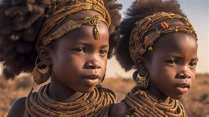
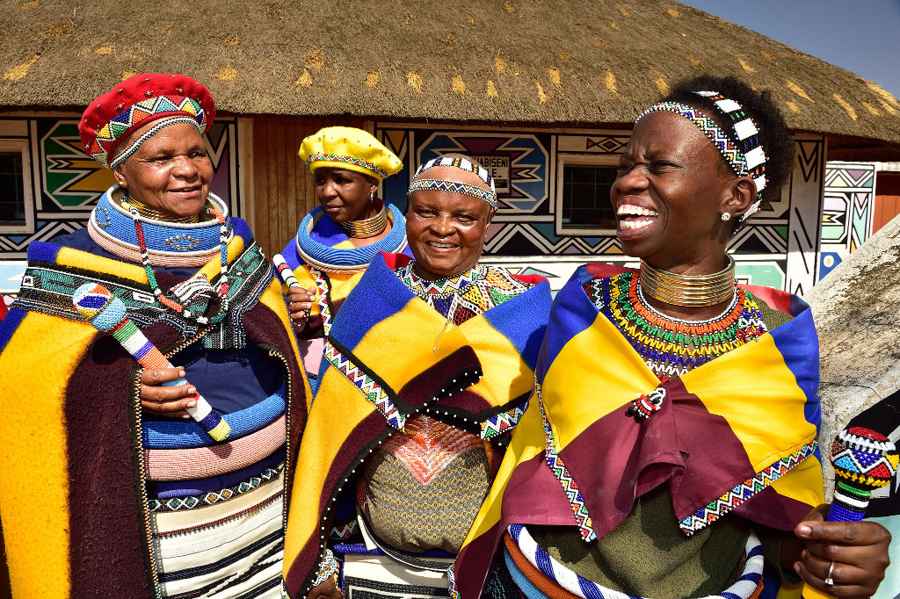
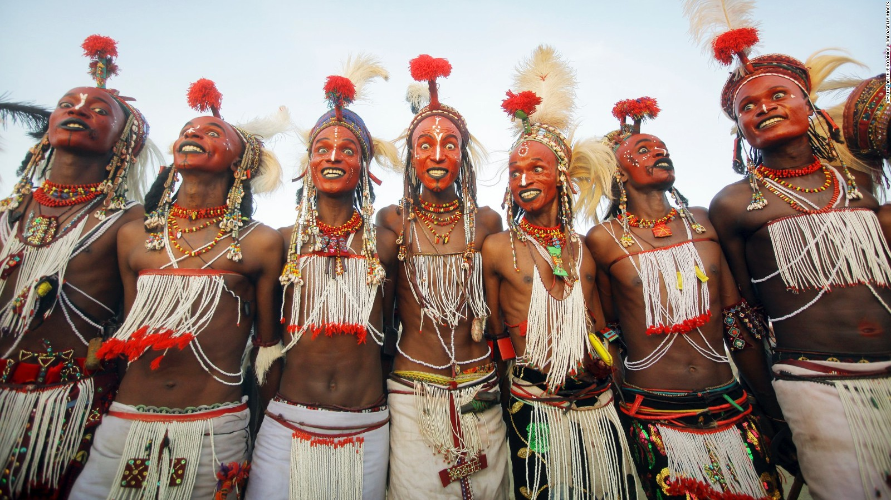

Sobre a África
África é um dos seis continentes do mundo, sendo o terceiro maior em extensão territorial. O território estende-se por mais de 30 milhões de km², ocupando, aproximadamente, 20% da área continental da Terra. No continente vive mais de um bilhão de habitantes, fazendo dele o segundo mais populoso entre os demais.
Pais multiculturalismo

Abjalang
Abjalangues são uma tribo que vive na margem esquerda do Nilo Branco.
São classificados como nueres ou dincas (há divergência nas fontes), dois grupos de povos nilóticos dos quais os primeiros pertencem aos segundos como subgrupo.

Akan
A cultura Akan é a mais dominante e evidente nos dias de hoje, em Gana.
Algumas de suas mais importantes histórias mitológicas são chamadas Anansesem. Anansesem significa literalmente "a história da aranha".

Aku
Os Aku são um grupo étnico minoritário da Gâmbia, representando provavelmente menos de 2% da população.
Os Aku são descendentes de escravos libertos. Muitos falam Aku, uma Língua crioula à base de inglês